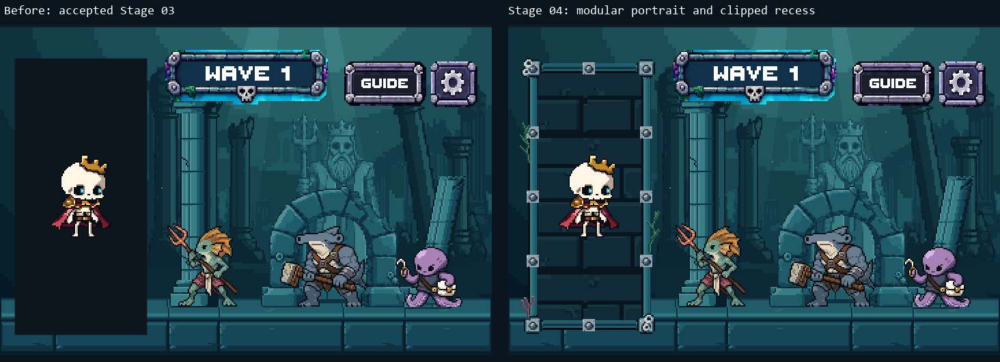
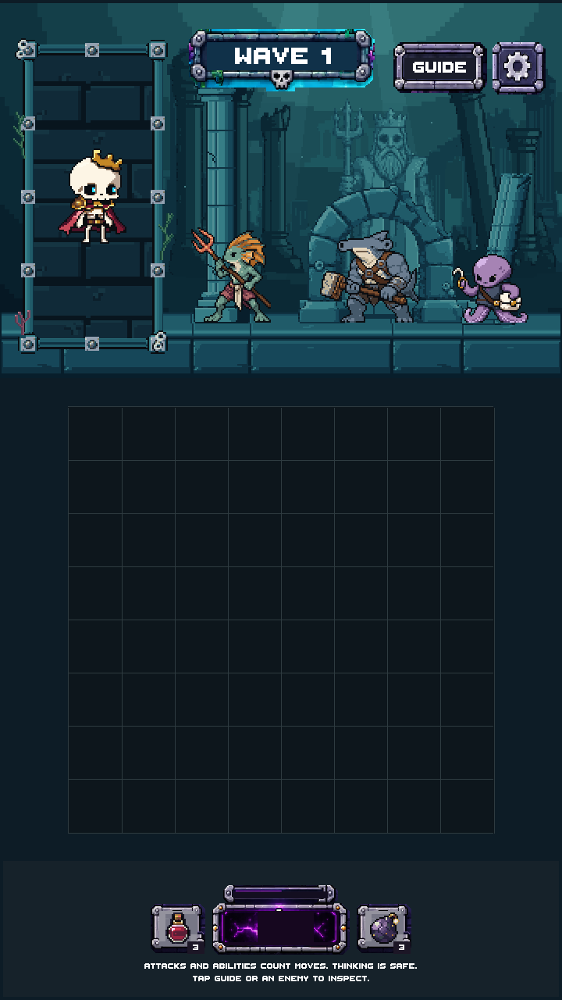
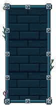
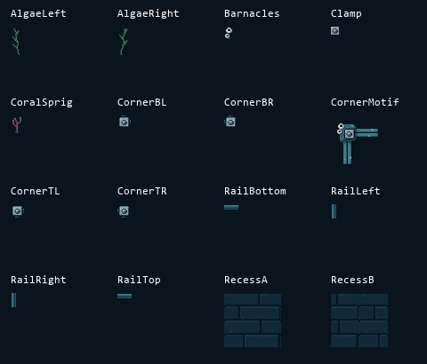
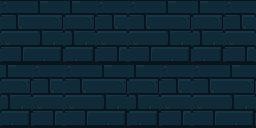
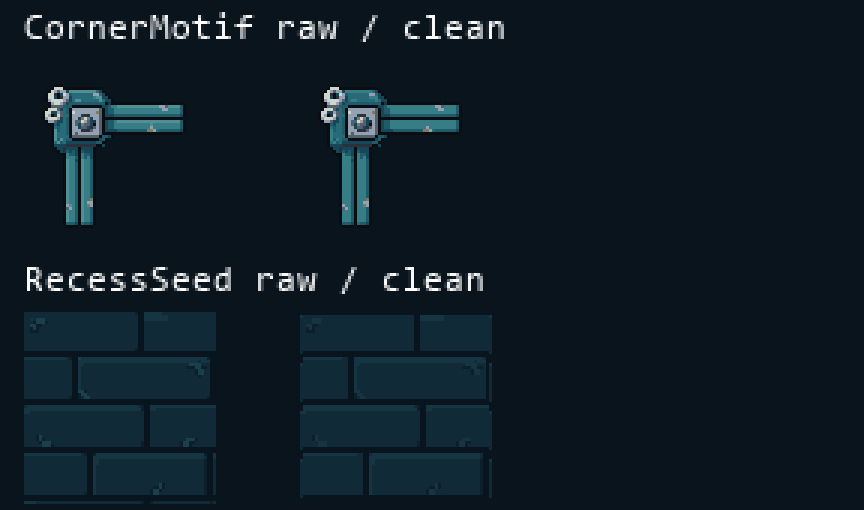
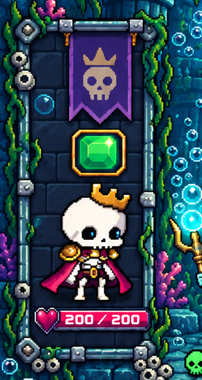
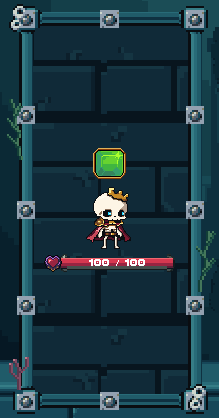
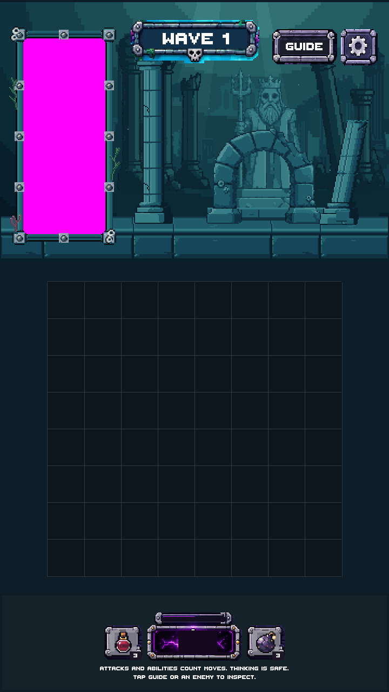

Modular portrait frame and clipped masonry recess · candidate for review
Teal carved stone, centered dull-silver sockets and restrained marine growth. Approved backgrounds, architecture, platform and shared UI are unchanged. 10 PixelLab generations spent · 590.20 remain. No merge or production integration.

Existing portrait geometry is retained. The frame uses four native corners and tiled rails; the inset fill deliberately overflows beneath its mask.
Art-only preview. HUD mode preserves actual production player/affinity/HP graphic sizes and positions at 720×1280. It is a static snapshot, not live combat. The board frame and surrounding scenery are later stages.

Only new frame/environment pixels are asserted at uniform 1×, 2× and 3×. Production safe-area behavior and actor/UI mapping remain integration-stage checks.



16 native files, including the material study and alternate recess. Art remains modular in Unity. Recess tiles use four colors; all materials together use 21 opaque colors.

Original sources are preserved. The socket and barnacles retain their native source pixels. Rails, aligned corners, marine stems and repeat boundaries were authored in LibreSprite.
Pack portrait reference — composition guide

Unity portrait · production HUD snapshot · 2× crop

The reference informs cool stone, dull hardware and exterior growth. The game's existing player scale and layout remain authoritative.

The fill extends 128 reference pixels beyond each mask edge. All 54,656 magenta pixels remain inside the inset; zero leaks. The corners stay square across three resize tests.
| Asset | Native size | Opaque colors | Files |
|---|---|---|---|
| AlgaeLeft | 12 × 32 | 3 | PNG · LibreSprite |
| AlgaeRight | 12 × 32 | 3 | PNG · LibreSprite |
| Barnacles | 12 × 16 | 7 | PNG · LibreSprite |
| Clamp | 9 × 9 | 7 | PNG · LibreSprite |
| CoralSprig | 12 × 20 | 4 | PNG · LibreSprite |
| CornerBL | 15 × 15 | 11 | PNG · LibreSprite |
| CornerBR | 15 × 15 | 11 | PNG · LibreSprite |
| CornerMotif | 64 × 64 | 10 | PNG · LibreSprite |
| CornerTL | 15 × 15 | 11 | PNG · LibreSprite |
| CornerTR | 15 × 15 | 11 | PNG · LibreSprite |
| RailBottom | 16 × 7 | 5 | PNG · LibreSprite |
| RailLeft | 7 × 16 | 5 | PNG · LibreSprite |
| RailRight | 7 × 16 | 5 | PNG · LibreSprite |
| RailTop | 16 × 7 | 5 | PNG · LibreSprite |
| RecessA | 64 × 64 | 4 | PNG · LibreSprite |
| RecessB | 64 × 64 | 4 | PNG · LibreSprite |
Unity validator passed; 16 exact LibreSprite roundtrips, 20 exact edge pairings and import equivalence passed. 280 accepted stage files and 7,839 protected production/settings files remain unchanged. The before capture equals Stage03; pixels outside the portrait remain identical.
Artistic judgment: 8/10 for this portrait stage, pending your review. No later stages have begun.
Full report and limitations · Pixel checks · Unity checks · Generation lineage